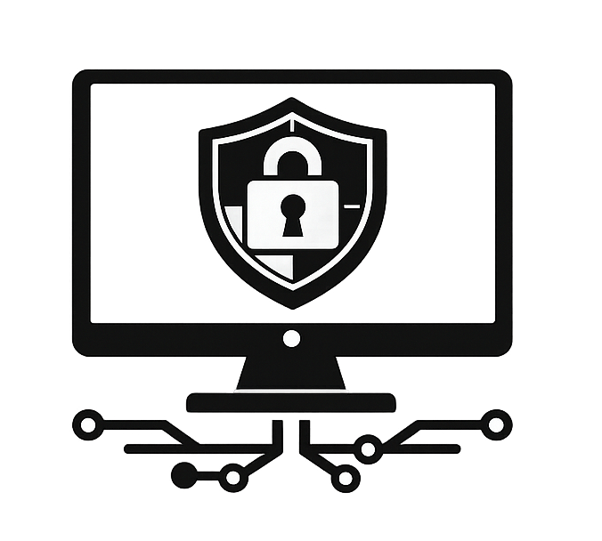
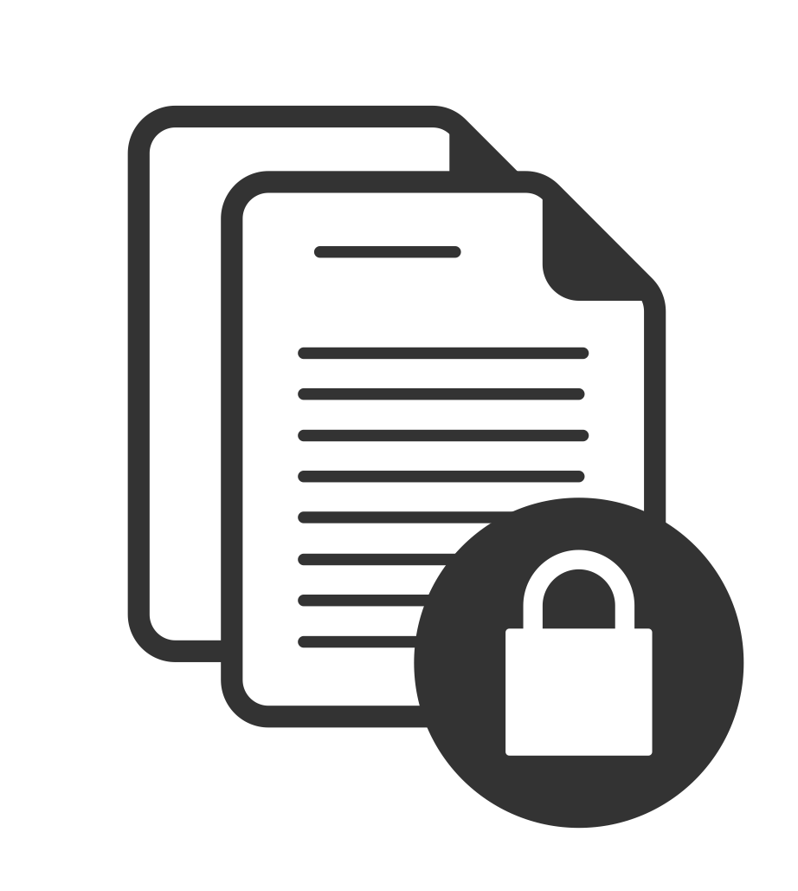
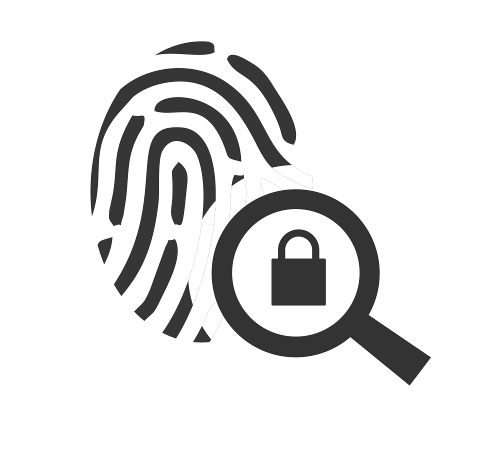

Building a hotel security policy manual
Connecting security policy to real hospitality operations, from access control and guest privacy to business continuity.
Read case studyBuilding a career at the intersection of security operations, governance, risk, and research.
GRC / SECURITY OPERATIONS / OSINT
I’m Nicole, an entry-level cybersecurity professional with interests in governance, risk, compliance, security operations, and research-driven analysis.
This portfolio brings together my background, certifications, and hands-on projects as I continue building my career in cybersecurity.
More about meThe areas I’m continuing to develop through study, certifications, and hands-on projects.

Building foundational knowledge in security monitoring, incident response concepts, and practical defensive security workflows.

Exploring risk awareness, compliance concepts, governance principles, and structured security analysis.

Using curiosity, documentation, and open-source intelligence to investigate, analyze information, and communicate findings clearly.
Connecting security policy to real hospitality operations, from access control and guest privacy to business continuity.
Read case studyA team capstone exploring defense in depth, voter privacy, secure ballot handling, and operational resilience.
Read case studyLessons in search refinement, corroboration, OPSEC, and building a repeatable evidence-based reporting process.
Read case studyCertifications across security, cloud, and investigation.